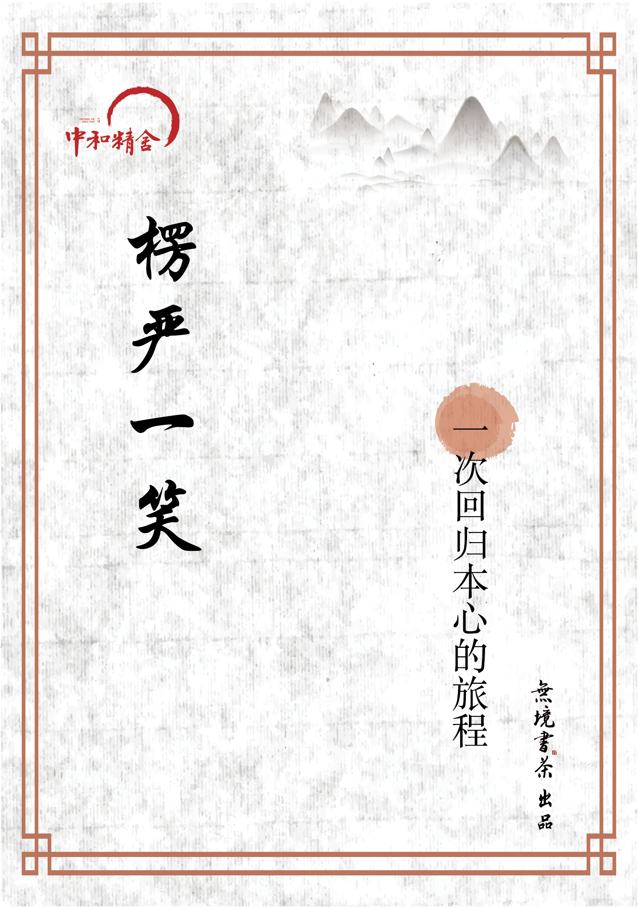

楞严一笑
《楞严经》原文
卷一
卷二
《楞严一笑》歌词
第一讲 《楞严经》是真正的宇宙生命科学
这个时代，我们为何还要听讲《楞严经》
楞严一笑，胜似无情却有情
你是真的“空空如也”吗？
第二讲：为什么我们找不到自己
人生无关生死，在于你有没有活过
《楞严经》的开端，也是人类的开端
发现自己生活中直心的那一刻
第三讲：身处虚幻，看清这个世界的虚幻
古人的“心眼”和现代人的“心眼”
向阿难学习，入乎其内
第四讲：拾回生命中的决心与勇气
梦境般颠倒的生活
佛陀和阿难，问答之间的慈悲
你的“一切无住”是真的无住吗？
第五讲 爱与慈悲带来的决心
追问真心
真心的困惑
第六讲 生命中真正的提升
海浪怎样知道它是大海
诸法所生，唯心所现
第七讲 实相，看见就是自由
禅医与“非自然性”
为何你“懂”了佛陀，却不懂阿难？
见恒河水与“不生不灭”
佛经中的生命科学
你有没有真正关心过别人和这个世界？
第八讲 当一切脱落，你还剩下什么？
变成一面干净的镜子，“如是我闻”
回归本位的智慧
你是怎样一步步变成一个可怜的人的？
“八还辨见”与我们的生活
第九讲 这是一个“你中有我，我中有你”的世界
你的世界是内心的投射
主观能见和客观世界：我中有你，你中有我
“人”是个意识体
爱情，永远在你人生的巅峰状态发生
为什么环境蜕变后，疾病奇迹般地治愈了
把生命活成一场奥秘
若能转物，则同如来
你真的明白“吸引力法则”吗？
新时代的游戏
第十讲 千江有水千江月
修习佛法要破除“我见”与“身见”
菩萨行愿的深意
千江有水千江月
奋发有为的喜悦之道
素位而行的智慧
相信的力量
在被“快乐”淹死的时代要学会跳脱
第十一讲 研习佛法与修正自身
信心的“信”讲的是什么？
释迦牟尼成道过程的深意
自身修持的重要性
当今科学以及疾病定义的局限
修持自身也要读佛经
止语让瞬息万变的世界安静下来
包容心的智慧
第十二讲 一切所见皆为病态
你的所见只是世界的冰山一角
你为何无法见到实相？
真正的相信，内心没有一丝阴霾
第十三讲：非和合生，及不和合
第十四讲：当代人为何难以悟道？
第十五讲
第十六讲
第十七讲
为什么说困住你的障碍都是假的？
整个世界都会配合你，活出生命的精彩
越来越多的宅男宅女是怎么回事？
人能活到90岁高寿靠得是什么？
人的身体为何而存在？
羊毛疔是如何一步一步形成的？
当你想成为一名成功的企业家
参话头还适合现代人吗？
以身成就是成道的前提吗？
你能看到满天彩霞是由自己决定的
娱乐节目对心灵的荼毒
Published with GitBook
楞严一笑
楞严一笑

results matching "
"
No results matching "
"